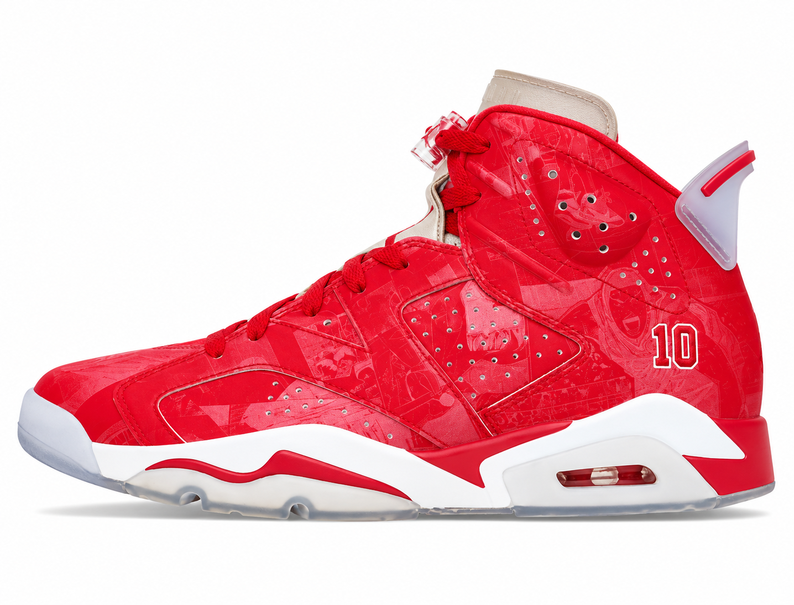
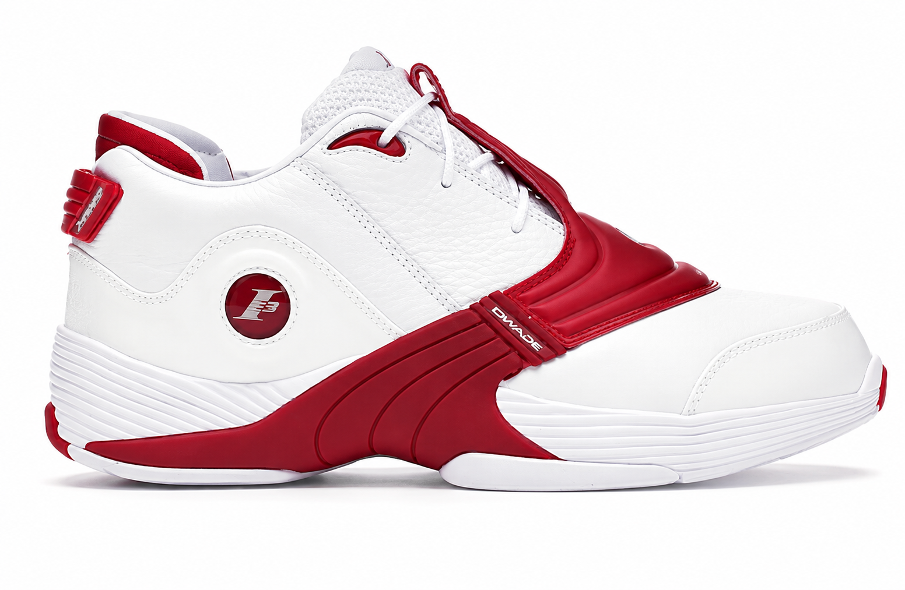
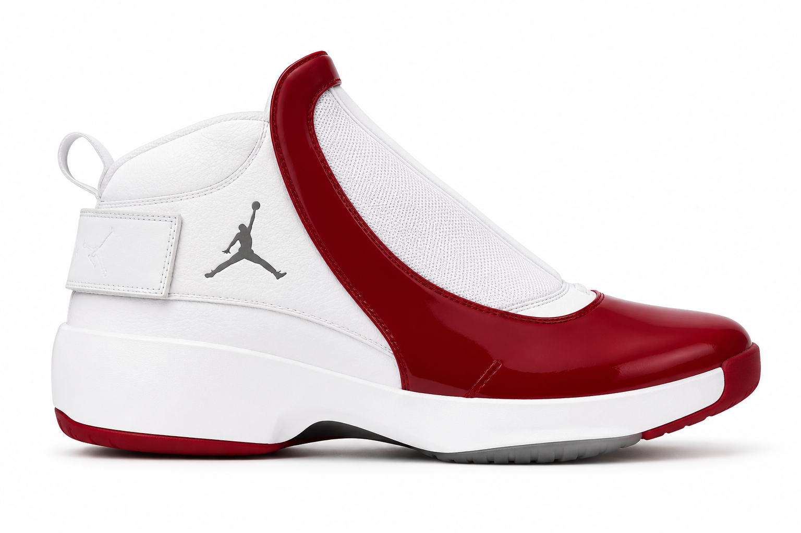
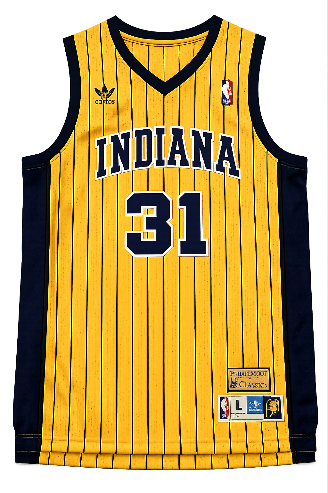
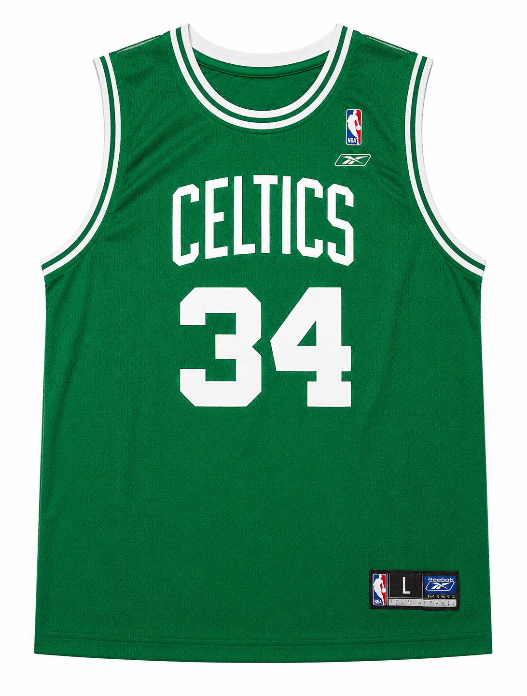
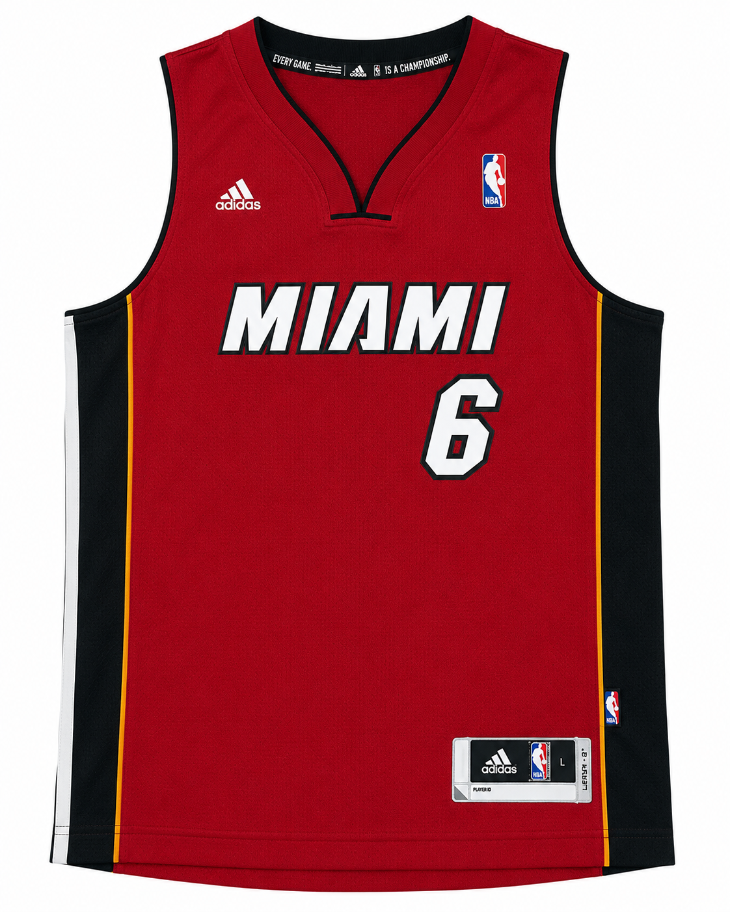
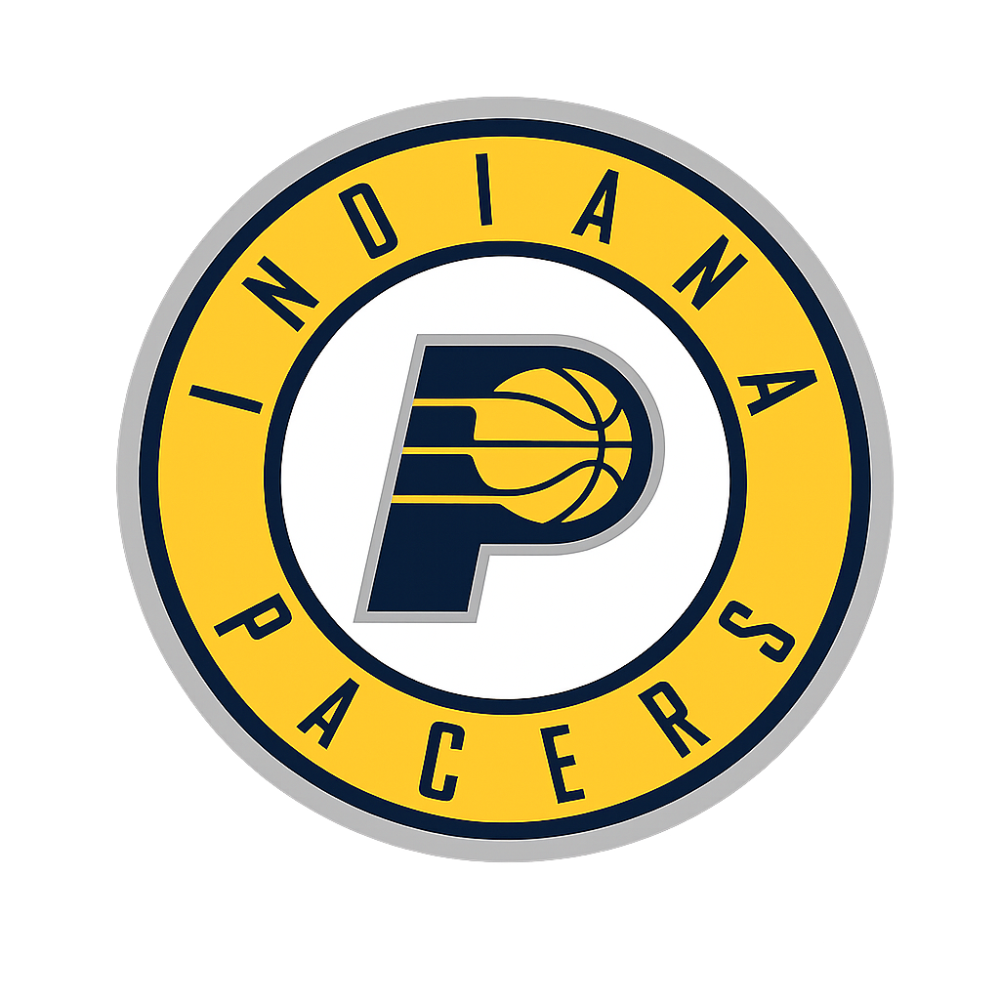
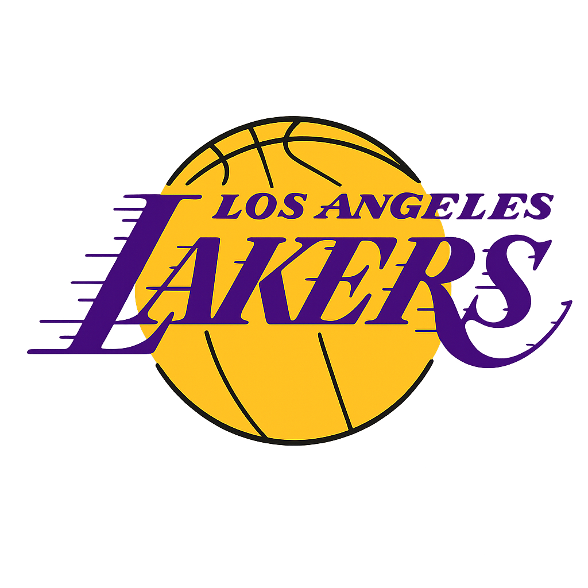
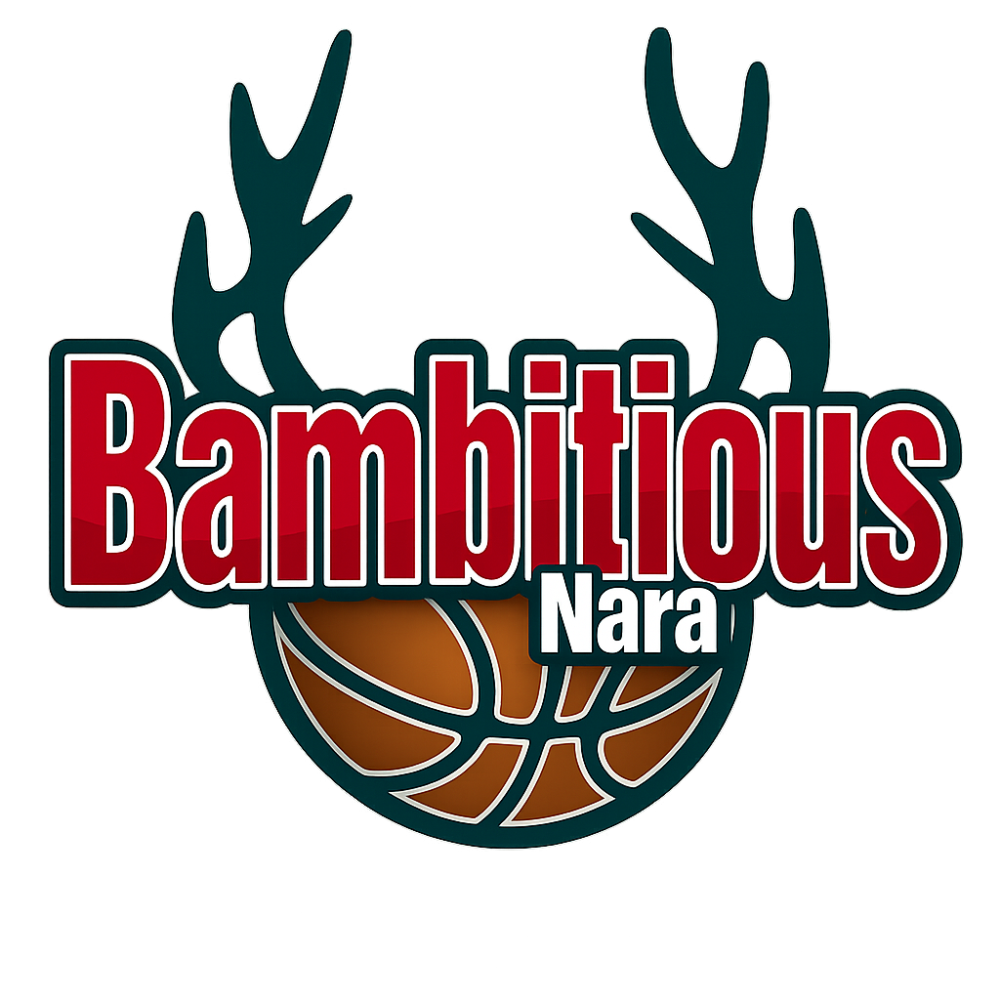

中学から続けているバスケットボール。
コートの上でも、仕事でも、チームで動くことが好きです。
地元の社会人サークルに参加。週末に体育館を借りて試合形式の練習を続けている。 ポジションはSF（スモールフォワード）。
就職後も仲間とチームを作って地域のリーグ戦に出場。 仕事が忙しくなる時期もあったが、バスケは常に生活の一部だった。
決して強いチームではなかったが、県大会でベスト8を達成。 3年間ベンチプレーヤーとして仲間を支え続けた。
バスケを始めたのは中学1年生。スラムダンクに憧れてバスケ部の門を叩いた。 3年間ベンチプレーヤーとして過ごし、それでもバスケが好きで続けた。

スラムダンクコラボモデル。デザインへの思い入れはもちろん、 履き心地も抜群で大のお気に入りの一足。

アレン・アイバーソンの代名詞モデル。小柄ながら大男たちと渡り合うアイバーソンのスタイルに憧れた。

スリムなシルエットと独特のデザインが魅力。

3ポイントシューターの代名詞。クラッチシューターとしての精神力と、 相手を挑発しながら沈めるメンタルに憧れた。

「ザ・トゥルース」の異名を持つ勝負強いスコアラー。 セルティックスのレジェンドとして長年チームを支えた姿がかっこいい。

ヒート時代に初優勝を果たしたレブロンのユニフォーム。 圧倒的な身体能力とIQの高さで時代を超えた選手。

レジー・ミラーに憧れてファンになったチーム。 クラッチな場面で決め続けるミラーのメンタルと、ペイサーズの泥臭いチームバスケが好き。

コービー・ブライアントへのリスペクトからずっと追いかけているチーム。 Mamba Mentalityは今でも自分の仕事への向き合い方に影響している。

地元・奈良のチームとして応援しているBリーグのクラブ。 機会があれば試合を観に行く。